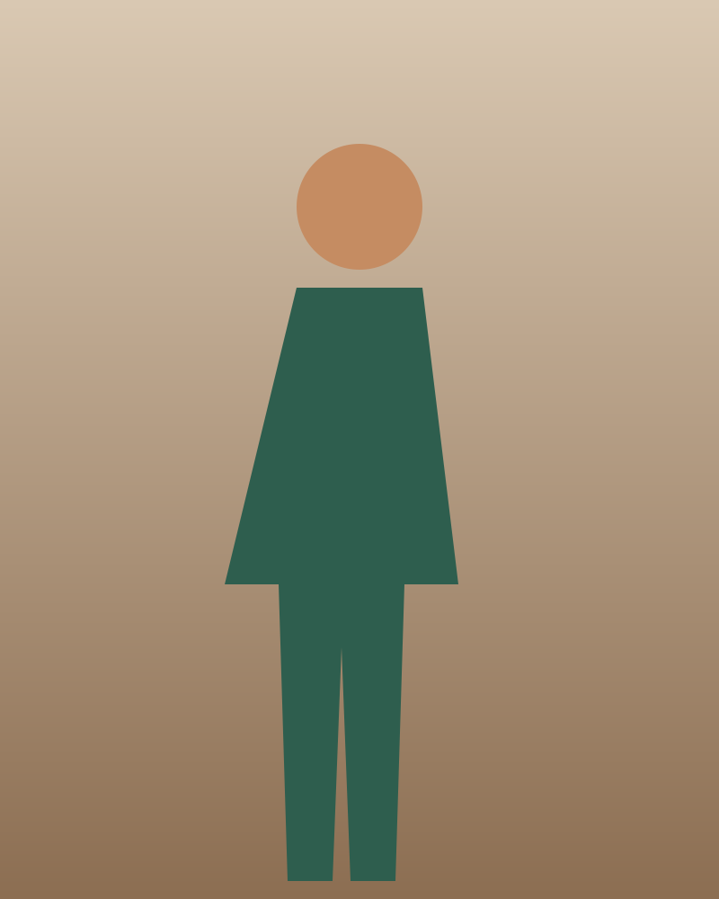

Image manager
Every state of ol[st-image-list] and li[st-image-row] and the editor's image set, in light and dark. Requirements: image-manager.md.
Variants
The library's ol[st-image-list] and li[st-image-row], composed by the application with st-file-upload, st-progress, st-text-field, st-alert and button[st-button]. The uploading and failed looks use the modifier classes this CRD decides (D-1).
.field-row in the body slot; landscape files crop to the 4:5 thumbnail. AC-26Remove test shot 2?
It's removed when you save the studio. Test shot 1 stays.
Test shot 2, full length on the cyc; scuffs show where the wall meets the floor.
Can't remove this test shot
States
Focus is forced with data-state (documentation only); everything else uses the real attributes and classes.
| State | Rendering |
|---|---|
| Ready | |
| Only image (both ends) | |
| Moved to the top, focus kept | |
| Uploading | |
| Upload finished |
|
| Failed |
|
| Invalid alt text |
|
| Files refused before upload | JPEG, PNG, WebP or AVIF, up to 20 MB each. studio-floorplan.svg isn't a supported image. Use JPEG, PNG, WebP or AVIF. raw-export.tif is 25 MB. The limit is 20 MB. |
Both themes


gallery-03.jpg didn't upload. Check your connection.
- Describe this image
gallery-03.jpg didn't upload. Check your connection.
- Describe this image
Responsive
Below 48rem a row is a 5rem thumbnail beside the body with the actions wrapping along the bottom (44 px buttons); from 48rem it is three columns with the actions stacked on the right. Each frame is a real viewport.
Contrast
Tokens
| Part | Token | Light | Dark |
|---|---|---|---|
| Row edge | --color-border-default | ||
| Failed row edge | --color-danger-border | ||
| Behind the rows | --color-bg-surface | ||
| Thumbnail well | --color-bg-photo | ||
| Placeholder glyph | --color-fg-subtle | ||
| File line | --color-fg-muted | ||
| Failed status | --color-danger-fg | ||
| Progress fill | --color-action | ||
| Progress track | --color-bg-subtle-hover | ||
| Focus ring | --color-focus-ring | ||
| Row padding, list gap | --space-3 | ||
| Column gap | --space-4 | ||
| Body and actions gap | --space-2 | ||
| Row radius | --radius-md | ||
| Thumbnail radius | --radius-sm | ||
| File line type | --text-body-sm | ||
| Progress transition | --duration-deliberate |
Performance





image-manager/performance harness scenario (gallery part): eight ready rows; the route adds the three test shots and one uploading row. "Move up: gallery image 8" is measured. AC-27